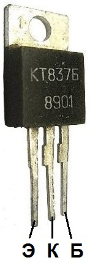

Транзисторы КТ837
Транзисторы КТ837(2Т837) - кремниевые, мощные, низкочастотные, структуры - p-n-p.
Корпус металло-пластик. Маркировка буквенно - цифровая.


Рис. 1 - Внешний вид, цоколёвка и размеры транзистора КТ837
Таблица 1
| Наимен. | Uкбо(и),В | Uкэо(и), В | Iк max(и), мА | Pк max(т), Вт | h21э | Iкбо, мкА | fгр, МГц | Uкэ н, В |
|---|---|---|---|---|---|---|---|---|
| КТ837А | 80 | 60 | 7500 | (30) | 10-40 | ≤150 | ≥1 | <2,5 |
| КТ837Б | 80 | 60 | 7500 | (30) | 20-80 | ≤150 | ≥1 | <2,5 |
| КТ837В | 80 | 60 | 7500 | (30) | 50-150 | ≤150 | ≥1 | <2,5 |
| КТ837Г | 60 | 45 | 7500 | (30) | 10-40 | ≤150 | ≥1 | <0.9 |
| КТ837Д | 60 | 45 | 7500 | (30) | 20-80 | ≤150 | ≥1 | <0,9 |
| КТ837Е | 60 | 45 | 7500 | (30) | 50-150 | ≤150 | ≥1 | <0,9 |
| КТ837Ж | 45 | 30 | 7500 | (30) | 10-40 | ≤150 | ≥1 | <0,5 |
| КТ837И | 45 | 30 | 7500 | (30) | 20-80 | ≤150 | ≥1 | <0,5 |
| КТ837К | 45 | 30 | 7500 | (30) | 50-150 | ≤150 | ≥1 | <0,5 |
| КТ837Л | 80 | 60 | 7500 | (30) | 10-40 | ≤150 | ≥1 | <2,5 |
| КТ837М | 80 | 60 | 7500 | (30) | 20-80 | ≤150 | ≥1 | <2,5 |
| КТ837Н | 80 | 60 | 7500 | (30) | 50-150 | ≤150 | ≥1 | <2,5 |
| КТ837П | 60 | 45 | 7500 | (30) | 10-40 | ≤150 | ≥1 | <0,9 |
| КТ837Р | 60 | 45 | 7500 | (30) | 20-80 | ≤150 | ≥1 | <0.9 |
| КТ837С | 60 | 45 | 7500 | (30) | 50-150 | ≤150 | ≥1 | <0,9 |
| КТ837Т | 45 | 30 | 7500 | (30) | 10-40 | ≤150 | ≥1 | <0,5 |
| КТ837У | 45 | 30 | 7500 | (30) | 20-80 | ≤150 | ≥1 | <0,5 |
| КТ837Ф | 45 | 30 | 7500 | (30) | 50-150 | ≤150 | ≥1 | <0,5 |
Аналоги транзистора КТ837В
- 2SB834,
- 2SB906